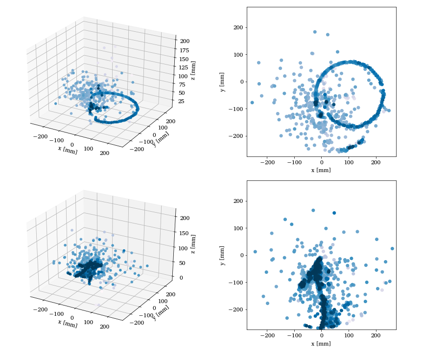

Two- and three-dimensional representations of two events from the Argon-46 experiment. Each row is one event in two projections, where the color intensity of each point indicates higher charge values recorded by the detector. The bottom row illustrates a carbon event with a large fraction of noise, while the top row shows a proton event almost free of noise. See Unsupervised Learning for Identifying Events in Active Target Experiments by Solli et al. for more detials.
